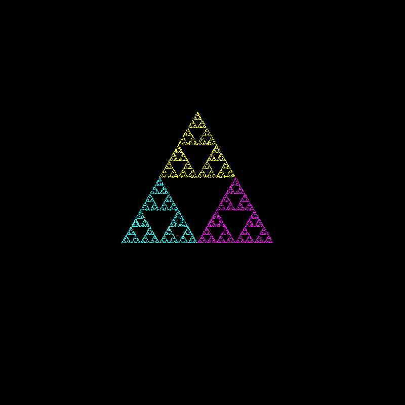

Information about the Code:
This program generates the attractors of iterated function systems (IFS) which are input by the user. The IFS editor is made to be interactive, so that any user can input values both graphically or numerically, as well as to adjust settings for viewing the generate images.
The code is Python and uses TKinter for its graphics. Though more primitive, TKinter can be used to create interactive programs even though its learning curve is not as high.
Interactive elements of TKinter involve two main types of features. On one hand, there are widgets. Widgets are the components of the interface that one creates. These include but are not limited to buttons, which when clicked execute a command, entries for imputting data, and labels which might indicate some other feature, but do not in themselves do anything else. For drawing objects, there is also a "canvas" widget.
On the other hand, there are also events. Events are commands that are executed through the use of the a mouse click or a keyboard key press. The FIS editor events are purely based on the mouse. Events are called not just for mouse click (left or right can be specified), but also when holding down a mouse button, and for release of the button. In this program, one can change linear tranformations by altering their graphic representations. Eact alteration depends on the click, hold, and release events. The click event determines the line closest to the cursor. Each line is tagged with the tick marker of its corresponding parallelgoram, which enables the program to access the whole parallelogram and alter it. The release event completes the desired alteration.
TKinter is meant to have one main window, and any other window should be seen as "derivative" of the first. For such derivative "windows" we use TKinter's "Toplevel" type instead of its "Window" type. The program runs on two parts. The main window, titled "Iterated Function System Editor",consists of a grid of entries containing values of up to four linear transformations,as well as the image of the unit square under each transformation. The graphical images of the linear transformations can be altered through rotations, translations, dilations, and skewing of sides, and these can be used to construct any kind of linear matrix transformation in two dimensions.The functions comprise an IFS which can be used to generate a set of points. The second part is a "Toplevel" type, titled "attractor", and generates the attractor (or fractal) of the IFS. It includes customization on the number of points used to generate it, the starting point, and the size of the figure.
The IFS editor window:
The top part of the window is a Canvas widget with a size of 800x800 pixels with an X and Y axis. These lines are drawn and fixed. Since the Canvas represents a coordinate plane, there are also variables AxisX and AxisY which scale the units to \( \frac{n}{2} \). The default values are AxisX=10 and AxisY = 10, enabling a coordinate grade extending 5 units both in the positive and negative x and y directions. This allows for scaled drawings of transformations. On the bottom left corner under the IFS canvas widget is a label widget that displays the coordinates where the mouse is pointing, scaled by AxisX and AxisY. The coordinates of the plane are displayed below the botton left corner of the canvas. If a canvas has some entries and you wish to clear them, pressing the "clear" button removes all transformations and sets the values of the entries back to 0.

IFS Buttons and transformations:
The IFS editor can take up to four transformations. in order to keep track of the transformation, there is a "tick" counter which cycles from numbers 0 through 3. Each of the four transformations has its tick number as a tag, distinguishing it from the others.
There are six buttons corresponding to different alterations of a linear transformation. The "create" button akes a unit square. If there are already four transformations, it sends the figure representing the transformation with the current tick tag back to the unit square. This prevents any more transformations from being made. Another important factor to note is NOT generated by the Tkinter square function, but is is in fact four lines each given the same tick marker. The reason for this is that other alterations, entry-wise or graphic-wise, change squares into other quadrilaterals.
Four other IFS linear transformation buttons enable one to alter currently existing transformations in a graphic manner. Because these all involve mouse events (including the click, hold, and release), The editor can only encorporate at most one alteration setting. For example, both rotation and translation involve events where one drags a mouse to alter an image, but Tkinter can only do one of those two motions.
For this reason we use the transformation buttons. Essentially, these buttons serve as modes of alteration. A click on the "skew" alteration button tells the editor that mouse events on the "window" canvas will be those pertaining to the skewing of a chosen line of the parallelogram representing the linear transformation. These buttons are color coded, but what determines the choice of event is whether they (and not others) are highlighted.
The following cases determine the alteration performed when one clicks and drags a line:
Move:
corresponds to translation of the transformation according to the current location of the cursor.
Rotate:
Rotates the parallelogram about its center (can go either clockwise or counter clockwise).
Skew:
skews a parallelogram in the following manner: one chooses a line and clicks on it or near it, and dragging the mouse simply drags the line. The line opposite to it is fixed. The adjacent lines are determined by the location of the fixed line and the line moved by the cursor.
Stretch:
stretches a parallelogram in the direction perpendicular to the line chosen. This works best in the case that the parallelogram is a Rectangle, since it simply increases the length of the sides adjacent to the chosen line. However, stretching any other parallelogram would also distort the figure, so it is best to stretch before one skews a figure.
Here is an example of some alterations. In this case, the last alteration transformed was a translation. The yellow square is just a transformation of the unit square. purple rectangle is a translation, rotation, and a stretch. The cyan is a translation and skew, and the green combines all four:

Under the Canvas there are four rows, labeled \(f_1, f_2, f_3, f_4\) for each of the functions in the iterated function system, each with 6 different entry widgets. The entries correspond to the elements in a matrix transformation and take in a string of a decimal number. Columns 1 and 2 correspond to the x and y components of the image of the vector [1,0], the unit x-direction vector. For example, if you have the first and second columns of f1 are [3,5], the linear transformation is mapping [1,0] to [3,5]. The third and fourth columns correspond to the x and y coordinates of the image of [0,1], the unit y-direction vector. Finally, columns 5 and 6 correspond to translation. In the unit square, the translation is [0,0], which is the "bottom left" corner of the square. A transformation, say, with entries [2,-2] moves that corner 2 units to the right and 2 units down.
To sum, the function entries correspond to a linear transformation. As an example, if you have inside the entries the values [1,2,3,4,5,6] this represents the transformation
$$
\left[ \begin{matrix}
x_2 \\
y_2
\end{matrix} \right]
= \left[ \begin{matrix}
1 & 2 \\
3 & 4
\end{matrix} \right]
\left[ \begin{matrix}
x_1\\
y_1
\end{matrix} \right]
+\left[ \begin{matrix}
5 \\
6
\end{matrix} \right],
$$
When the program is opened, the default entry values are all 0. If one alters a parallelogram representing any one of the four linear transformations, then the entries will change accordingly to represent the altered result.
Finally, the fifth way to change the transformations it to change the values of the entries themselves. For this, one changes certain entry values (these can only take int or float numbers. Inserting an operator yields an error), and when done, press the "entries" button. This will change the graphic representation of the transformation to match the entries. For example, you can change the entries to those in the patrix transformation above. Since the vertices of the image are outside the range of the default AxisX and AxisY settings, changing AxisX and AxisY to 30 (which gives a coordinate plane ranging from -15 to 15 in the \( x )\ and \( y )\ directions. Yields the following. Here the purple square is the unit square, and the cyan parallelogram is its image under the transformation.

At this point, entries can only edit already existing parallelograms, not make new ones. Make sure you have all four rows of entries filled out beforehand through the "create" button before pressing the "entries," and set the entries of any unwanted transformation and its probability to 0.
Sometimes, the scaling of the plane might be too large or too small. The Axis entries in the bottom give the value of the number of units you want displayed. Again, the default values are 10 and 10 ( giving a square centered at the origin which is 10 units wide in the X and Y) directions. To change the scaling, give a different value n for X and/or Y, and press the entries button.
The functions are called on randomly when generating the attractor. The probabilities column of entries gives probability values. The values do not need to add up to 1; the program will just take into account the proportion. If one is using less than 4 transformations in the IFS, the porbabilities of unused functions can be set to 0. The default value of probabilities is contained in the list titled "P".
IFS attractor window:
One can consider the domain of an IFS to be sets of points rather than points themselves.
In such a case, the attractor is the unique set that is fixed by the IFS. As it turns out,
these sets have self-similar components, that is, one can partition the set into parts that
are similar to the whole set, save for some level of skewing or rotation. A clear example is the Serpinski Triangle the top, bottom left, and right portions of the triangle are smaller versions of the triangle itself.

The Attractor window presents the attractor of the functions generated by the IFS. The method of generating the attractor is a random iteration algorithm. In order to generate the IFS's attractor, simply press the "start" button in the attractor window Starting with the point (0,0), one of the functions in the IFS is randomly chosen. Then, the output is in turn made the input of another randomly chosen function. This iterative process repeats and continues up to the value in the "num points" entry. The default value is set to 10,000, but can be changed to a desired value. The different colors correspond to the points generated by each of the transformations.
Different attractors have different sizes, so if an attractor is too large or too small, one need only change the x and y scalings. Since TKinter draws objects using pixel coordinates, the actual numerical values of the points generated by many better known fractals will only take up a few pixels on the canvas. For example, y coordinates of generated points in the Parnsley fern range between 0 and 10. without scaling, the fern would only take up 10 pixels, but when scaled to 50 times the original size, one gets a fern 500 pixels high.
One can also generate an attractor in different parts of the attractor window. The Start Point entry enables this feature. The values are numbers between 0 and 1. The first of the two tells how far right one wants to locate the origin, and the second tells how far down it should be located. For example, the values [ 0 , 0 ] cause the attractor to begin on the top left corner, whereas the values [ 1 , 1] tell it to begin in the botton right. The default is [0.5 , 0.5 ] which makes the generated attractor begin in the center. Sometimes, it is necessary to change these values depending on where the point (0,0) is in the attractor. For the Barnsley Fern, (0,0) lies at the bottom of the stem and extends upward, so the default Y component of "starting point" is 0.9.
Here is an example of a fractal generated by two transformations. Even though there are four defined transformations, the blue and purple functions have probabilities set to 0, so they do not have any input in the generation of the attractor. On the left hand side is the attractor of the IFS. During the iterative process, the yellow points are generated by the function \( f_3 \), while the purple ones are generated by \( f_2 \).

One can add more attractors to the attractor window. To clear the attractor screen, simply press "clear". However, it must be noted that if the points have not all been generated, pressing "clear" only removes the points that had previously been generated. Any remaining points after "clear" has been pressed will continue to appear on the attractor window. For user purposes, do not press the "start" button and repeatedly since it will take far longer to generate all the points.
Just like clearing before the attractor is fully generated only clears the points before "clear" is pressed, so altering the functions in the IFS window can influence how the points are generated. If one also sets the number of points generated to a higher amount (say, 40, 000) and clears occasionally, this helps in experimentally learning how different alterations can influence a fractal in a version of "real time."
The attractor window also contains a menu of sample IFS's. Clicking on one of those sets the entries in the IFS window to the values of the linear transformation and creates its corresponding graphical representations. In addition, these sample attractors come with default starting points and scalings. The samples include the Serpinski triangle, the Barnsley fern, the Pythagorean tree, and finally the Koch snowflake curve. If one so wishes he can generate the attractor, but also alter some of the transformations to see how they influence the attractor.
Code for IFS editor